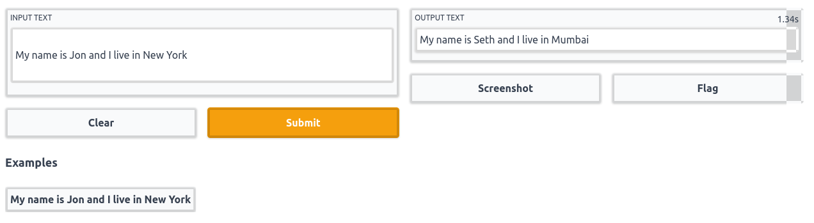
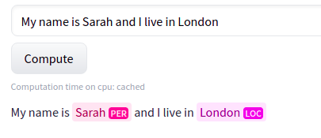
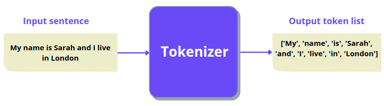

Named entity recognition¶
The plan for this chapter is to:
Learn about named entity recognition(NER)
Train a transformer model for NER
Build a web app demo(using Gradio) around the trained model to convert a sentence from western context to Indian context.
If you did not get the last point, here is an example to make it clear:
If we pass the sentence “I am going to Paris” as input, the model will modify the sentence and give the output as “I am going to Mumbai”. As you can see, the model identified the word “Paris” and coverted it to “Mumbai” which is more familiar to Indians. The idea for this demo is inspired from this blog post.
Below you can see the final demo that we will be building in this chapter:

What is named entity recognition(NER)?¶
At present, there are a wide variety of tasks that machine learning models are capable of doing, named entity recognition or NER is one them. In short the job of a model trained for this task is to identify all the named entities in a given sentence.
Here is a figure showing what the model is expected to do for NER:
In the above figure, the model recognizes “Sarah” as a person(PER) and “London” as a location(LOC) entity. Since the other words do not belong to any category of entities, no labels are present in the output for those words.
Named entity recognition does not limit to identitfying a person, location or organization, it can also be used for identifying parts of speech of each word in a sentence. The term used to generalize these kinds of tasks is called token classification.
As humans, when we are reading a book, we understand a sentence by reading each word in that, right? Similarly, before passing a sentence into our models, we split them into simpler tokens using something called a tokenizer.
The simplest tokenizer you can think of is splitting a sentence into words as shown below:
Input sentence: This is looking good
Output tokens: ['This', 'is', 'looking', 'good']
And here is a figure to illustrate the same:
